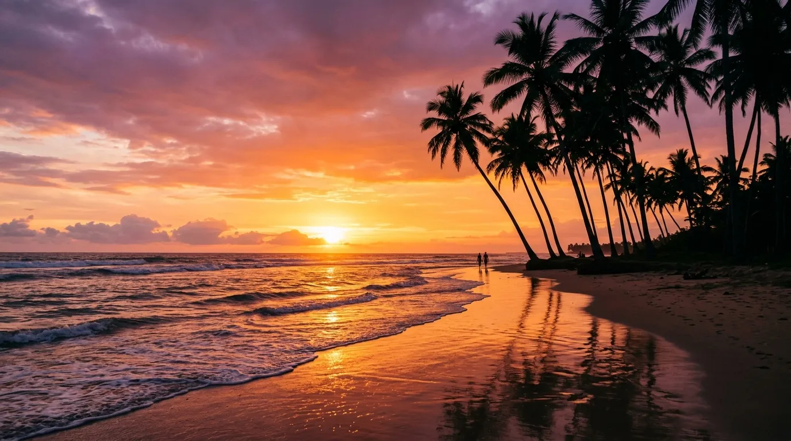
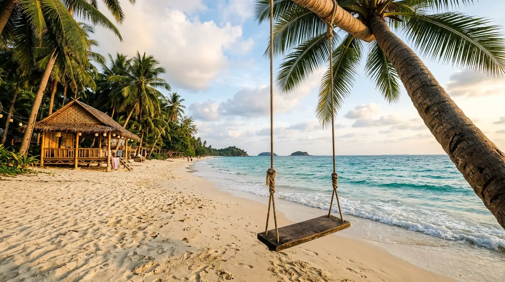

Kalau kamu penggemar wisata pantai selatan Jawa yang punya cerita lebih dari sekadar pemandangan indah, Pantai Ngliyep adalah salah satu destinasi yang wajib dikunjungi. Terletak di Kabupaten Malang, pantai ini terkenal dengan deburan ombak khas Laut Selatan, hamparan pasir yang tenang, sunset yang memukau, sekaligus aura mistis yang melekat kuat sejak puluhan tahun lalu.
Artikel ini akan mengulas info Pantai Ngliyep terbaru, mulai dari rute, harga tiket, legenda yang menyelimutinya, hingga tips berkunjung yang aman dan nyaman.
Pantai Ngliyep bukan sekadar pantai untuk bersantai, tapi juga tempat yang sarat nilai budaya dan spiritual masyarakat Jawa, dengan legenda Nyi Roro Kidul yang masih hidup hingga hari ini.
Sekilas Tentang Pantai Ngliyep
Pantai Ngliyep berada di Desa Kedungsalam, Kecamatan Donomulyo, Kabupaten Malang, Jawa Timur. Pantai ini mulai dibuka untuk umum sejak tahun 1980-an dan sudah menjadi tempat wisata favorit bagi wisatawan lokal maupun luar daerah hingga sekarang.
Dengan luas kawasan mencapai 10 hektare, pantai ini memberi ruang leluasa bagi pengunjung untuk bersantai maupun bermain di sepanjang pesisirnya.
Sebagai salah satu wisata yang dikelola secara resmi oleh Perhutani dan Pemkab Malang, fasilitas di sini sudah cukup memadai, mulai dari area parkir luas, warung makan, toilet, hingga penginapan dan camping ground. Kombinasi antara suasana alami khas pantai selatan dan legenda yang menyertainya membuat Pantai Ngliyep punya daya tarik tersendiri dibanding pantai-pantai lain di Malang.
Lokasi dan Rute Menuju Pantai Ngliyep
Pantai Ngliyep terletak di Desa Kedungsalam, Kecamatan Donomulyo, Kabupaten Malang, dengan jarak sekitar 65 km dari pusat Kota Malang dan waktu tempuh sekitar 2 jam menggunakan kendaraan pribadi.
Rute yang bisa kamu ikuti:
Dari Kota Malang, ambil arah menuju Kepanjen, Pagak, lalu Donomulyo. Ikuti papan penunjuk jalan menuju kawasan Kedungsalam. Jalan menuju lokasi sudah memiliki jalur yang memadai sepanjang perjalanan dari Kota Malang, sehingga tidak perlu khawatir soal akses.
Jika tidak membawa kendaraan pribadi, kamu juga bisa menggunakan angkutan umum dari Karangkates dan Kepanjen dengan kode trayek GN1 dan GN2.
Pantai ini juga berdekatan dengan destinasi populer lain seperti Pantai Balekambang, sehingga bisa dijadikan satu rute perjalanan wisata pantai selatan Malang dalam satu hari.
Harga Tiket Masuk dan Biaya Lainnya
Berikut rincian biaya terbaru yang perlu kamu siapkan:
Pantai Ngliyep beroperasi 24 jam penuh, namun loket penjualan tiket hanya buka pukul 08.00 sampai 18.00 WIB setiap hari. Jika kamu berencana datang di luar jam tersebut, misalnya untuk camping semalaman, sebaiknya beli tiket lebih dulu atau hubungi pengelola untuk pengaturan khusus.
Catatan: Pengelola dapat sewaktu-waktu mengubah kebijakan harga tiket dan biaya lainnya, jadi sebaiknya cek info terbaru sebelum berangkat.

Nuansa Mistis Pantai Ngliyep: Legenda Nyi Roro Kidul dan Larung Sesaji
Yang membedakan Pantai Ngliyep dari kebanyakan pantai selatan lainnya adalah kekentalan nuansa mistisnya. Di kawasan pantai ini terdapat sebuah bukit kecil bernama Gunung Kombang yang dipercaya sebagai tempat favorit Nyi Roro Kidul saat berkunjung, bahkan konon menjadi tempat ia bertapa sebelum menjadi ratu.
Gunung Kombang dipercaya sebagai tempat penampakan Nyi Roro Kidul, sang penguasa Laut Selatan. Di Jawa Timur, khususnya di Malang Selatan tepatnya di Pantai Ngliyep, sosok ini disebut dengan nama Kanjeng Ratu Kidul.
Tradisi Larung Sesaji
Setiap tahun, masyarakat sekitar menggelar upacara adat yang dikenal sebagai Labuhan atau Larung Sesaji. Tradisi ini digelar setiap bulan Maulud, atau Rabiul Awal dalam kalender Hijriyah, sebagai bentuk rasa syukur dan permohonan keselamatan kepada penguasa Laut Selatan.
Dalam upacara ini, sesaji berupa kepala kambing, aneka hasil bumi, makanan tradisional, dan kain berwarna disiapkan oleh warga Desa Kedungsalam, kemudian dilarung ke tengah laut dari atas Gunung Kombang, lokasi yang dianggap sakral dan dipercaya sebagai pintu gerbang menuju kerajaan gaib Ratu Kidul.
Tradisi labuhan ini sudah dilakukan secara turun-temurun sejak masa Mbah Atun, sosok yang dipercaya sebagai penemu kawasan Ngliyep.
Selama prosesi larung sesaji berlangsung, ada beberapa pantangan yang dijaga ketat. Peserta ritual wajib berpuasa dan area tersebut tidak boleh didatangi wanita, serta ada pantangan tidak mengenakan pakaian berwarna hijau gadung, warna yang secara umum dipercaya masyarakat pesisir selatan Jawa sebagai warna kesukaan Nyi Roro Kidul.
Bukit Cinta Kasih
Selain Gunung Kombang, ada juga mitos lain seputar Bukit Cinta Kasih yang terletak di sisi kiri hamparan pasir Pantai Ngliyep. Bukit yang tidak terlalu tinggi ini menawarkan pemandangan indah dari atasnya, dan dipercaya menjadi tempat yang istimewa bagi muda-mudi yang belum menjalin ikatan.
Aura mistis inilah yang membuat Pantai Ngliyep terasa berbeda, bukan sekadar pantai untuk bersantai, tapi juga tempat yang sarat nilai budaya dan spiritual masyarakat Jawa.
Daya Tarik dan Aktivitas di Pantai Ngliyep
Teluk Putri
Teluk Putri adalah teluk yang terletak di dalam area Pantai Ngliyep. Untuk menuju ke sana, pengunjung tidak perlu berjalan kaki terlalu jauh, cukup menuju sisi kiri pantai lalu naik ke bukit yang tidak terlalu tinggi. Teluk ini dinamakan Teluk Putri karena pasirnya yang berwarna putih dan sangat lembut, dengan kedalaman pasir sekitar 40 cm dan panjang pantai sekitar 100 meter, sangat nyaman digunakan untuk menyendiri. Namun perlu diperhatikan, di teluk ini pengunjung hanya diperbolehkan sampai di tepi pantai saja.
Spot Sunset Terbaik
Salah satu aktivitas favorit wisatawan di pantai ini adalah menikmati keindahan matahari terbenam yang cukup romantis. Jam terbaik untuk datang adalah sore hari menjelang matahari terbenam, karena biasanya pantai sudah tidak terlalu ramai di jam tersebut.
Spot Foto Instagramable
Ada banyak spot foto instagramable di pantai ini, seperti pohon kelapa, ayunan, gubuk selfie, dan panggung bambu.
Camping
Karena beroperasi 24 jam, pantai ini juga populer sebagai lokasi camping, pengunjung bisa bermalam dan mendirikan tenda langsung di area pantai. Namun pengunjung yang ingin berkemah tetap diwajibkan mendapatkan izin terlebih dahulu dari pengelola demi keamanan dan kenyamanan bersama.
Fasilitas di Pantai Ngliyep
Fasilitas yang tersedia di Pantai Ngliyep cukup lengkap, meliputi:
- Area parkir luas untuk motor dan mobil
- Toilet umum
- Mushola untuk beribadah
- Warung makan sederhana dan toko oleh-oleh
- Tempat penyewaan tenda
- Penginapan dan camping ground
Sebagai kawasan yang dikelola resmi oleh Perhutani dan Pemkab Malang, fasilitas ini juga terus dilengkapi dari waktu ke waktu.
Tips Berkunjung ke Pantai Ngliyep
- Datang sore hari menjelang golden hour untuk menikmati sunset terbaik sekaligus suasana yang lebih tenang.
- Hormati aturan dan pantangan setempat, terutama jika kebetulan berkunjung saat prosesi Larung Sesaji berlangsung.
- Waspadai ombak Laut Selatan yang cenderung besar dan berarus kuat, sebaiknya hindari berenang terlalu jauh dari bibir pantai.
- Siapkan uang tunai untuk tiket masuk, parkir, dan jajanan di warung sekitar pantai.
- Bawa perlengkapan camping sendiri jika berencana bermalam, dan pastikan sudah mengurus izin ke pengelola.
- Cek jam buka loket tiket, yaitu pukul 08.00 sampai 18.00 WIB, jika berencana datang di luar jam operasional normal.
- Kombinasikan dengan Pantai Balekambang yang lokasinya berdekatan untuk itinerary wisata pantai selatan yang lebih lengkap dalam satu perjalanan.
- Jaga kebersihan dengan membuang sampah pada tempatnya karena kawasan ini juga bagian dari upaya pelestarian pesisir selatan Malang.
Catatan: Harga tiket, biaya parkir, dan kebijakan pengelolaan Pantai Ngliyep dapat berubah sewaktu-waktu. Disarankan untuk mengecek informasi terbaru sebelum berangkat, terutama jika berencana berkunjung saat momen tradisi Larung Sesaji.